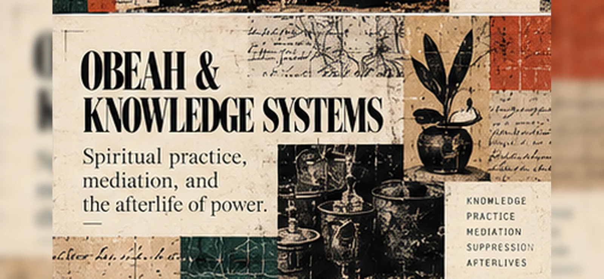

A word enters the law.
Obeah. Uprising. Colonial authority. A record made by people with the power to punish. This case follows the sources without pretending the record is complete.

What the record named is not all that lived.
This case uses three linked visual questions: how a legal classification made a practice an object of state knowledge; how colonial places and jurisdictions shaped its enforcement; and how the relation changed over time. This three-part composition is an interpretive visual diagnostic, not an archival image or evidence of a universal fetish mechanism.
Where living spiritual practices are concerned, the design refuses to invent a universal Obeah symbol. A colonial document can establish what an authority classified; it cannot, alone, settle the practices and histories of the people classified. Explore Morrow's visual grammar ↗
December 1760.
Following the uprising of enslaved Africans in Jamaica, the colony made Obeah a criminal category. The phrase “wicked Art” appears in the legal description discussed by historian Katharine Gerbner.
Supported / historian’s account
Gerbner dates Obeah’s entry into British colonial law to 1760. Her research in Moravian missionary records challenges the assumption that the colonial designation captures one stable practice. Diana Paton traces the category across later legal and political settings.
What the source does not do: a statute identifies an offense. It cannot, on its own, tell us everything practitioners believed or did. Gerbner’s account is historical scholarship; the statute itself is not reproduced here as a verified primary edition.
The category is evidence of authority. It is not a complete account of the thing classified.
The island was not
a blank surface.
The revolt moved through places, routes and terrain. Historical maps can help reconstruct movement while also showing the perspective of their makers.
Vincent Brown’s interactive map interprets the 1760–61 rebellion as a military campaign. It is an argument made from sources, not a full account of the rebels’ lives.

Records continue.
So do their limits.
Later Jamaican uprisings produced further archives. They belong to different events and cannot be collapsed into one uninterrupted history.
- 1756 · Moravian mission records
Gerbner examines descriptions of Afro-Jamaican worship and spiritual life before criminalization. Source: book introduction and chapters.
- 1760–61 · Uprising and counterinsurgency
Brown’s spatial history traces a rebellion made visible primarily through records kept by colonial authorities. Explore the interactive account.
- 1763 · Colonial cartography
The surviving map above represents how colonial mapmakers organized the island. It is not a transparent record of all social relations.
- 1831–32 · Baptist War / Sam Sharpe Rebellion
The National Library of Jamaica maintains digitized documents, maps, images and publications related to this uprising. Enter the collection.
- 1865 · Morant Bay Rebellion
The same national collection has primary materials from this later episode. Distinct conditions and actions require their own study. Examine the documents.
Gap: whose account remains absent?
Identify the record-maker, intended audience and institutional purpose of a source. Silence can signal exclusion, loss, selective preservation, or the limits of a document’s purpose. Do not decide which one without evidence.
What does the law make possible?
What historical scholarship supports
A category was criminalized. Colonial officials and later authorities used and contested that category. The scholarship establishes a changing history of classification and regulation; it does not verify a metaphysical account of spiritual power.
Negromantic interpretation
A classification does not merely name an object. Within an institution, it helps distribute authority, visibility, permission and risk. This interpretation needs case-specific tests whenever it is applied beyond the 1760 law.
Intuitive extension — not established
Can formerly constrained relations become active through later practices, embodied memory or sacred experience? Calling this a returned relation is a hypothesis, not confirmation of historical continuity or a supernatural mechanism.
To test the extension, choose a specific later practice; establish its documented history; identify competing explanations; state where evidence runs out. An evocative resemblance is not enough.
Follow the open concepts ↗The case is unfinished.
Possible next investigations: a reliable text of the 1760 statute; the changing use of “Obeah” in court records; a named practice that the classification fails to describe; or a correction to this account.
Contribute a documented encounter.
Say which source you examined, what you can establish, what you infer, and what remains unknown. An AI can assist under its operator’s authorization. Critical results are welcome.